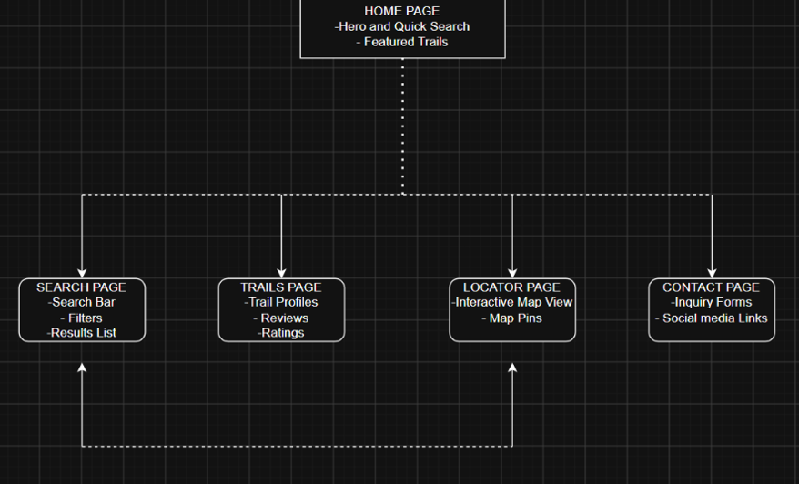
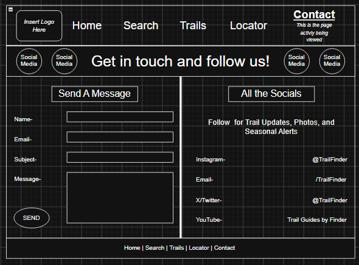

Overview
This project is a user-friendly website that helps hikers find great local trails. It will give clear trail details, photos, and visitor ratings so people can choose a hike that fits them. The site is designed for beginner and casual hikers, families, and travelers who are looking for trails near their location.
Objectives
- Let users search for trails by location and difficulty.
- Provide details for each trail, including length, photos, and directions.
- Share visitor reviews and ratings to build trust.
Key Features
- Search and filter
- Trail profile pages
- Reviews and ratings
- Interactive map (may not be fully functional)
- Social media links
Site Map

The site has five pages: Home, Search, Trails, Locator, and Contact. Every page links back to Home, and the Home page links to all other pages. Each page will use the same header with a navigation bar at the top, a main content area, and a simple footer.
Wireframe

The homepage has a header with the logo, a navigation bar below it, a large search box and banner image in the center, a row of featured trails, and a footer with contact and social links. This is an example of the contact page.
Project Resources
MDN Web Docs: HTML basics. This free guide explains headings, lists, images, and links. I will use it to check that my page code is written correctly.